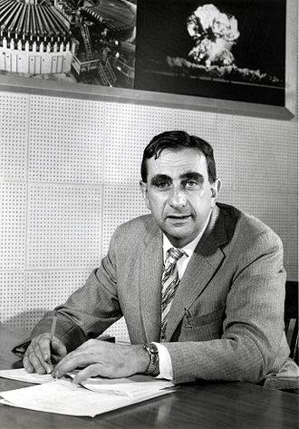
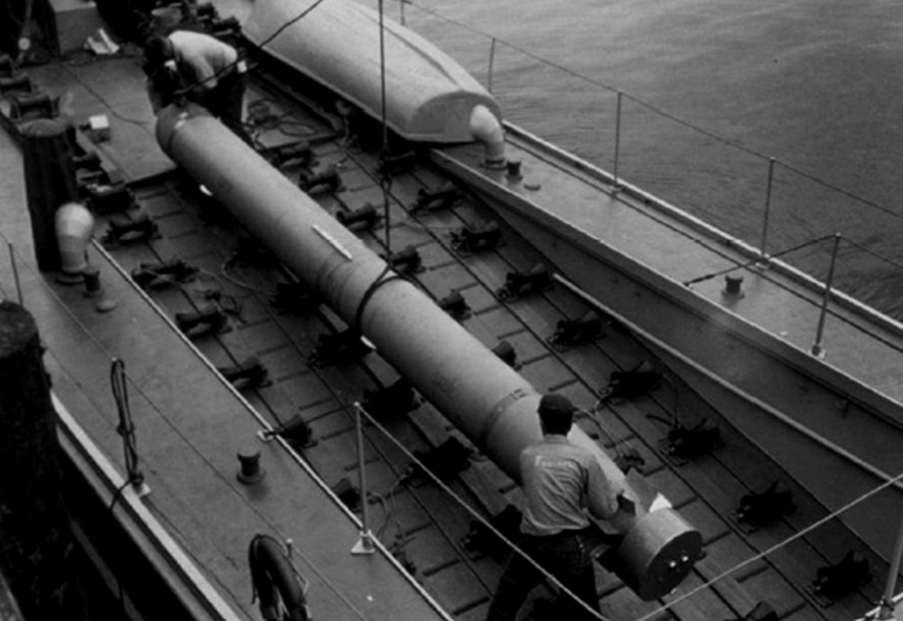
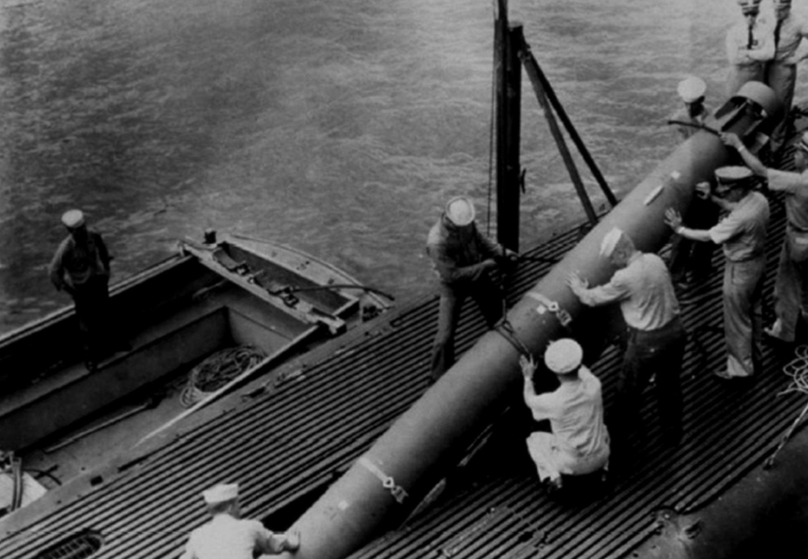
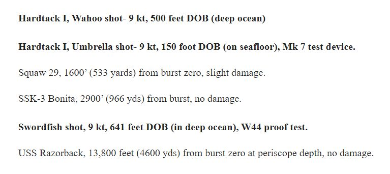
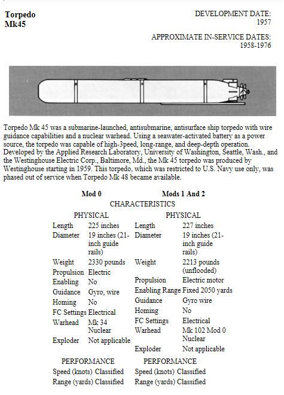
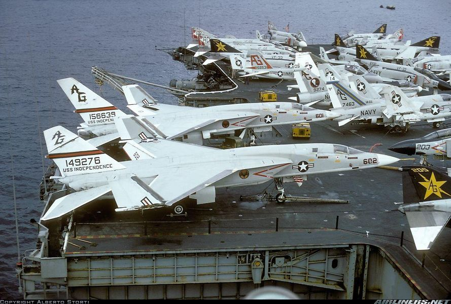
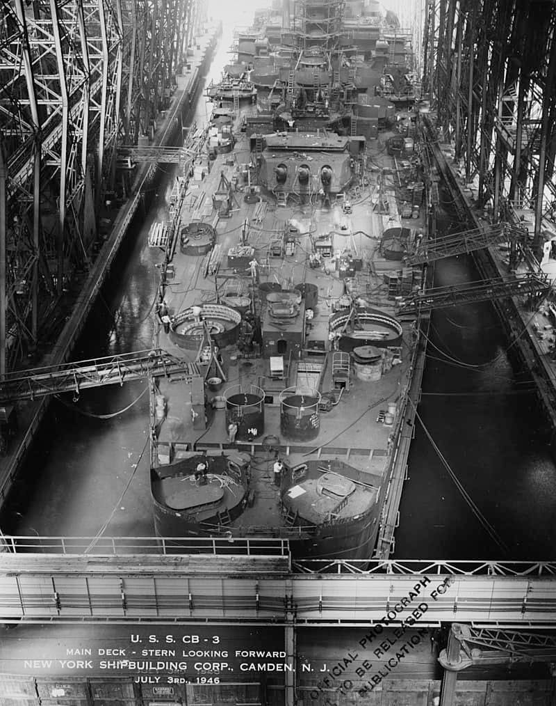
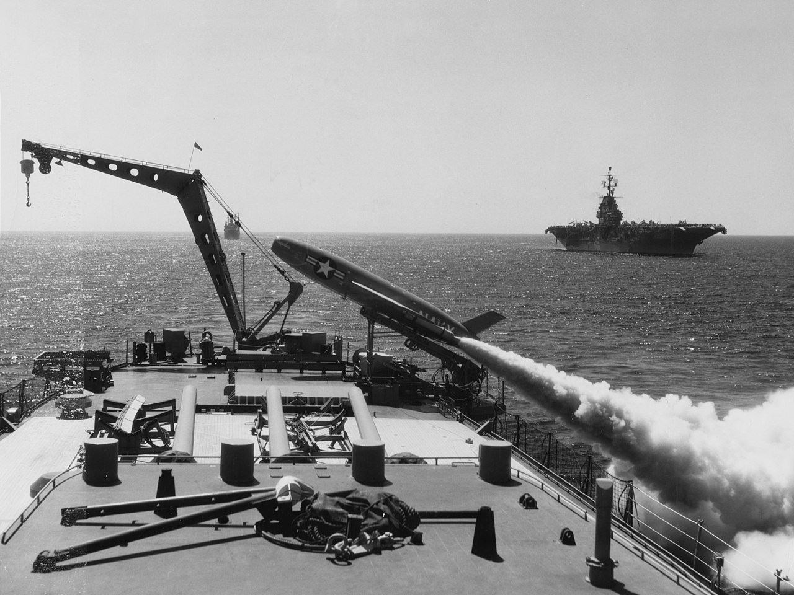
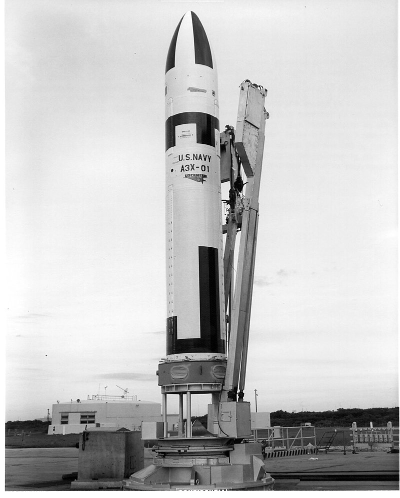

핵어뢰와 SLBM 개발 이야기
게시: 2022-11-17T06:30:45+09:00
<핵어뢰, 그리고 오펜하이머를 음해한 사나이> 이번에 러시아가 뜬금없이 세계를 멸망시킬 수 있는 초장거리 핵어뢰를 테스트한다는 뉴스를 듣고 생각난 일화. 세계 최초의 SLBM인 UGM-27 Polaris 미쓸의 핵탄두는 원래 핵어뢰 개발에서 시작된 것. 세계 최초의 핵잠함인 USS Nautilus는 1954년에 진수되었으나, 이때만 하더라도 핵잠함은 '잡아내기 어려운 잠수함'이었을 뿐 아무런 전략 가치가 없었음. 무장이 어뢰 뿐이었기 때문. 당시엔 아직 핵탄두가 너무 컸기 때문에 미쓸 등에 핵탄두를 넣는다는 생각을 못하고 있었음. 거기에 대해 '적 함대 전체를 궤멸시킬 궁극의 무기'를 제시한 사람이 바로 Edward Teller(사진1). 지금도 미국 핵연구소로 위명을 떨치고 있는 Lawrence Livermore National Laboratory의 설립자이자 당시 국장이었던 텔러는 미해군이 '핵잠함을 어뜨케 써야 잘 썼다고 소문이 날까'라고 고민을 하고 있는 것을 보고는 대뜸 '5년 안에 1메가톤짜리 핵탄두를 어뢰 안에 넣을 정도로 소형화 해주겠다'라고 선언.

이 소식을 듣고는 당시 핵무기 개발에서 로렌스 리버모어 연구소의 첨예한 경쟁자였던 Los Alamos 연구소의 Jordan Carson Mark는 물론 텔러의 부하들인 로렌스 리버모어 연구원들조차 깜놀. 도저히 해낼 수 있을 것 같지가 않았기 때문. 정말 뛰어났지만 매우 얌전했던 수학자였던 마크는 '0.5메가톤짜리를 10년 안에 만들겠다'라고 역제안. 그러나 당시 이미 '핵무기 영업사원'이라고 불리던 이론물리학자 텔러는 '해군은 1메가톤인지 0.5메가톤인지 따지지 않는다, 제일 중요한 것은 일단 시간'이라며 온갖 큰소리를 질러댔음. 결국 이 경쟁은 텔러의 완승으로 끝났는데, 이렇게 소형화된 핵탄두는 어뢰는 물론 Polaris 잠수함 발사 탄도탄의 실전 배치로 이어짐. 1960년대에 Mark 45 torpedo(사진2)에 배치된 핵탄두는 (텔러의 큰소리와는 달리) 11킬로톤의 위력이었는데, 참고로 히로시마에 투하된 핵탄두가 14킬로톤의 위력.

텔러는 '수소폭탄의 아버지'라고 흔히 불렸는데, 이론물리학에서도 많은 업적을 남김. 그러나 인기 시트콤 '빅뱅이론'의 괴짜 이론물리학자 쉘던(사진3)처럼 대인관계에 문제가 많았고, 급기야 1954년 공산주의에 동조한다고 의심을 받은 오펜하이머에 대한 청문회에서 오펜하이머에 대해 매우 적대적인 증언을 한 결과 학계에서 왕따를 당함. 그러나 대신 미정부의 절대적 지원을 받았음. 온갖 미친 계획을 고안하기도 했는데 대표적인 것이 알라스카에 쏘련에 대항할 군항을 만들기 위해 핵폭탄을 터뜨려 굴착을 하자는 것 등등.
<핵어뢰는 2척을 반드시 잡는다 - 목표물과 발사함> 1960년에 배치된 최초의 핵탄두 어뢰인 Mark 45(사진1)는 히로시마에 투하된 핵탄두와 거의 비슷한 위력인 11킬로톤의 위력을 가졌으나 뜨아하게도 그 유도 방식은 유선 뿐. 당시엔 이미 음향 유도 어뢰가 있었으나 굳이 유선 방식을 택한 이유는 핵탄두였기 때문. 혹시라도 음향 유도가 잘못 되어 아군 쪽으로 핵어뢰가 향하면 큰일이기 때문.

그런데 유선이다보니 와이어 길이만큼 사정거리엔 한계가 있었고, 최대 12km에 불과. 12km 밖에서 히로시마 핵탄두가 터진다고?? 그래서 흔히 "Mark 45가 발사되면 최소 2척은 반드시 잡는다 - 타겟 한 척, 그리고 발사한 잠수함 한 척" 이라는 이야기도 있었음. 그러나 그건 사실은 아니라고. 물 속에서 터지는 것이고 11킬로톤에 불과하기 때문에 의외로 위력이 약해서(?) 살상 반경은 900m 정도 밖에 되지 않는다고. 이 결과는 실제 테스트로 얻은 것 (사진2).
 
<왜 핵미쓸은 잠수함만 쏘게 되었나? 왜 순양함은 안되었나?> WW2가 끝난 뒤 미국은 핵폭탄을 쏘련에 바이든 하기 위한 투발 수단을 찾아 분주했음. 특히 육해군의 미쓸에 더해 공군의 전략 폭격기까지 각 병종별로 좀 지나치다 싶을 정도의 경쟁이 벌어짐. 아직 ICBM급 미쓸이 개발되기 전이던 1950년대, 유럽에 중거리 탄도탄을 배치하려는 육군과 초장거리 폭격기를 배치하는 공군에 비해 상대적으로 초라했던 것이 해군. A-3 Skywarrior와 A-5 Vigilante (사진1) 등 함재 핵폭격기를 개발하며 항공모함이 뛰어난 핵투발 수단임을 입증하려 했으나 자기들이 봐도 미쓸이나 장거리 폭격기에 비해 딸리는 것이 사실.

초조해하던 해군에게 잔뜩 있었던 것은 WW2 기간 중 만들다 만 전함 USS Kentucky (BB-66)이나 대형순양함 USS Hawaii (CB-3, 사진2) 등의 대형 함정들. 누군가 여기에 핵탄두를 탑재한 순항 미쓸이나 탄도 미쓸 발사대를 갖추고 미쓸 플랫폼으로 쓰면 어떠냐고 제안.

이건 상당히 말이 되는 제안. 당시 개발되던 SSM-N-8 Regulus 크루즈 미쓸 (사진3) 등은 아직 액체 연료를 썼기 때문에 잠수함에서는 운용이 좀 위험했음. 게다가 당시엔 잠수함도 미쓸 발사할 때는 물 위로 부상해서 발사해야 했음.

1950년대는 후반에 잠수한 채로도 탄도탄 발사가 가능해지기는 했으나, 당시의 액체연료 로켓은 발사할 때의 초기 속도가 꽤 느렸다는 점이 발목을 잡음. 이유는? 핵전쟁이 꼭 날씨가 좋을 때 발발하는 것이 아니었기 때문. 당장 발사 명령이 떨어졌는데 바다 위에 폭풍우가 밀어닥치고 있다면 발사 초기 힘겹게 가속하며 올라가는 액체연료 미쓸이 엉뚱한 방향으로 엎어질 위험이 존재. 그러니 차라리 폭풍우에도 흔들림이 덜한 몇 만톤급 전함이나 대형순양함에서 안정적으로 쏘는 것이 훨씬 그럴싸. 잠수함에 비해 발각되어 공격당할 위험이 높지 않냐고? 어차피 그건 항공모함도 마찬가지. 그러니 항모가 전투기를 바이든 하듯 그냥 항공모함처럼 당당하게 호위함 거느리고 다니다가 핵전쟁 나면 안정적으로 미쓸을 바이든 하는 것이 전혀 이상하지 않음. 그러나 이 모든 것은 고체 연료를 이용한 UGM-27 Polaris 미쓸(사진4)이 개발되면서 일장춘몽이 됨. 전함이나 순양함에서 폴라리스 미쓸을 쏘는 것도 여전히 나쁘지 않은 아이디어였으나, "그런 미쓸 전함과 그 호위함들 만들 돈으로 그냥 SSBN 더 만들고 말지"라는 말에 반박의 여지가 없었음. 결국 10년 넘게 미완성으로 어정쩡하게 남아있던 USS Kentucky도 USS Hawaii도 모두 일제히 고철상으로 팔려감.

** (혹시 기다리던 분이 계셨다면) 레이더 개발사 이야기는 다음 주에 계속 이어집니다...